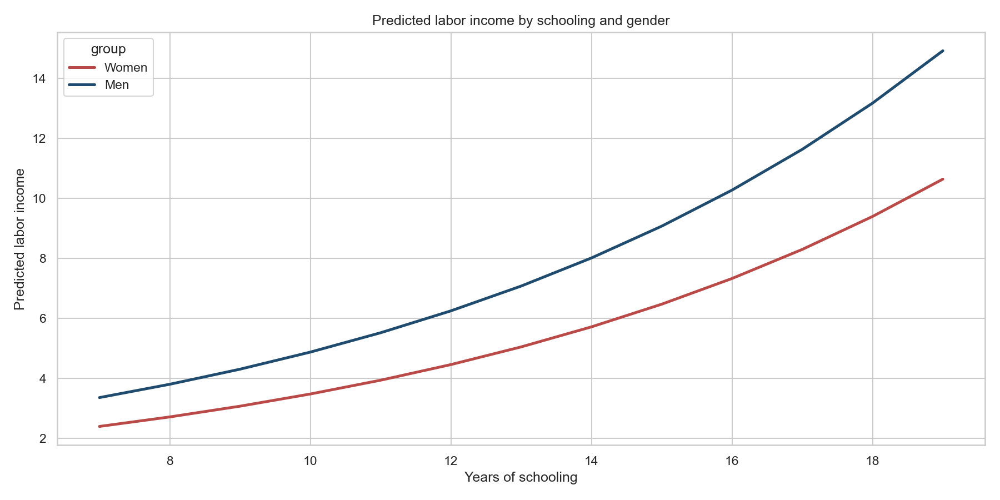
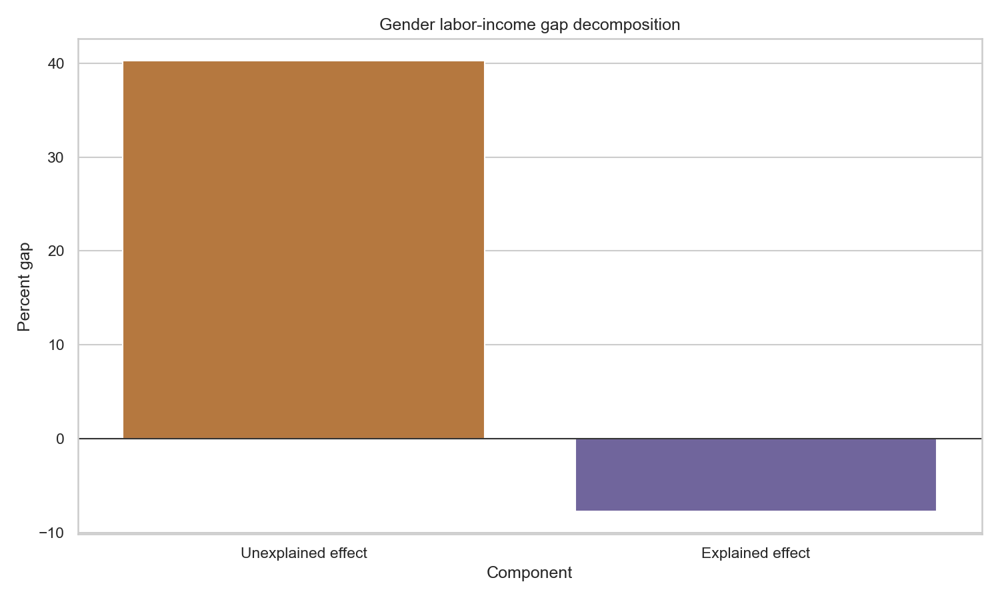
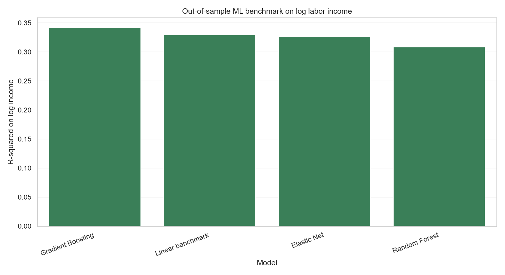
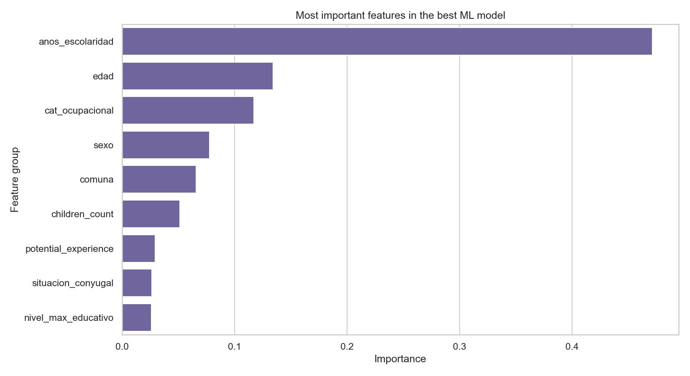
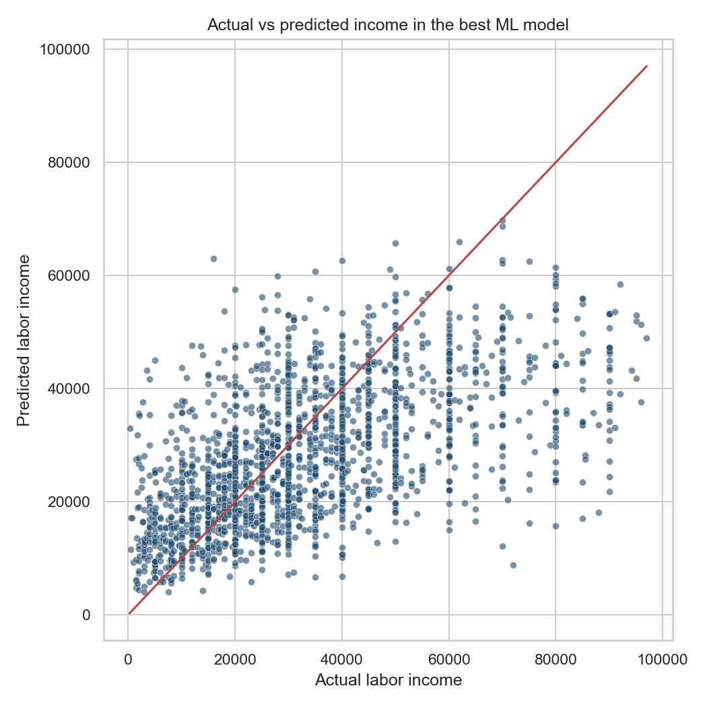

5,848
Households aggregated from the survey microdata
This project turns the 2019 Annual Household Survey into a full portfolio case on inequality in Buenos Aires. The updated version keeps the best part of the original delivery, which was its theoretical framing, but now adds formal tests, regression diagnostics, bootstrap inference, and cross-validated machine-learning benchmarks.
The Annual Household Survey matters because it does more than measure income. It captures who lives in each commune, how households are structured, how education is distributed, and which labor-market conditions accompany those characteristics. That makes it appropriate for a compact theory of urban inequality rather than a simple dashboard.
The conceptual base of the project is that inequality in Buenos Aires should not be treated as a one-variable problem. The city combines territorial segmentation, differences in schooling, differences in occupational position, and household dilution of resources. A strong analysis therefore has to move across several levels of aggregation instead of stopping at a single income ranking.
The household layer aggregates the raw survey into `5,848` distinct households across `15` communes. That is useful because the main inequality problem in cities is often experienced at the household level, not only by isolated individuals. The individual labor-income layer then focuses on employed adults aged `18` to `65` with positive labor income, producing a working sample of `6,656` observations for econometric analysis.
The descriptive story is already strong before modeling. Commune `14` reaches a median household income of `70,000`, while Commune `8` sits around half that level. At the same time, larger households are associated with lower per-capita income, which means a gross-income comparison alone would understate inequality in actual living standards.


The current version strengthens the original EDA by translating descriptive patterns into explicit hypothesis tests. This is important for portfolio quality: it shows that the narrative is not only visual, but statistically disciplined.
| Question | Test | Result | Interpretation |
|---|---|---|---|
| Do household-income distributions differ across communes? | Kruskal-Wallis | Statistic `380.86`, `p = 1.36e-72` | Income differences across communes are far too large to treat as sampling noise. |
| Is household size associated with per-capita income? | Spearman correlation | `rho = -0.388`, `p = 1.10e-209` | Larger households systematically experience lower per-capita resources. |
| Do education groups differ in total income? | Kruskal-Wallis | Statistic `2360.94`, `p < 0.001` | The income gradient by schooling appears long before the earnings equation is estimated. |
| Do male and female workers differ in labor-income distributions? | Mann-Whitney U | Statistic `6.36e6`, `p = 1.26e-25` | The raw gender gap is already visible before conditioning on occupation, commune, and schooling. |
The labor-income model uses a semilog Mincer specification with schooling, centered potential experience, occupation, commune, and gender. Centering experience is not just cosmetic. In the earlier version, the quadratic age-experience structure produced inflated collinearity; in the current version the relevant VIF values fall to roughly `1.01` to `1.15`, which makes the polynomial term stable and interpretable.


| Coefficient | Value | Meaning |
|---|---|---|
| Schooling premium | `13.25%` per year, `p < 0.001` | Each additional year of schooling is associated with materially higher labor income. |
| Male premium | `40.26%` approximate effect, `p < 0.001` | The coefficient remains large even after conditioning on commune and occupation. |
| Adjusted R-squared | `0.378` | The model captures a meaningful share of variation for noisy survey earnings data. |
| RESET test | `p = 0.914` | There is no strong evidence of a missing broad nonlinearity once centered experience is included. |
| Breusch-Pagan test | `p < 0.001` | Residual variance is not constant, so robust `HC3` standard errors are the right reporting choice. |
The Oaxaca-Blinder layer is where the project becomes more than a standard earnings regression. The question is no longer whether a gender gap exists, but whether observed characteristics explain most of it. In this sample, they do not.


| Component | Mean gap | 95% interval | Interpretation |
|---|---|---|---|
| Explained effect | `-7.72%` | `[-10.02%, -5.22%]` | Observed characteristics do not explain the direction of the overall gap; if anything, they offset part of it. |
| Unexplained effect | `40.18%` | `[35.16%, 45.08%]` | A large residual component remains after controls, which is the key substantive result. |
| Total gap | `29.36%` | `[23.75%, 34.78%]` | The full labor-income gap is economically large and statistically stable. |
The machine-learning benchmark is deliberately disciplined. It is not there to replace the economic story. It is there to test whether the interpretable structure misses a large amount of predictive signal. The answer is: not really.



| Model | Holdout R-squared | Cross-validated R-squared | Takeaway |
|---|---|---|---|
| Gradient Boosting | `0.342` | `0.346` | Best performer, but only marginally above the linear baseline. |
| Linear benchmark | `0.330` | `0.339` | Captures most of the usable signal with a fully interpretable structure. |
| Elastic Net | `0.327` | `0.338` | Regularization does not materially change the story. |
| Random Forest | `0.309` | `0.313` | Greater flexibility does not guarantee better out-of-sample performance. |

The project now supports a stronger theoretical statement than the original EDA: inequality in Buenos Aires is generated through interacting urban mechanisms rather than a single income hierarchy. Geography matters, education matters, household dilution matters, and a large gender gap remains even after observable controls. That layered conclusion is more persuasive than any single descriptive chart or any single predictive score.
For hiring purposes, the repository works well because it demonstrates judgment. It shows when to test, when to model, when to decompose, and when to stop adding complexity because the interpretable baseline is already doing most of the work. That is exactly the kind of discipline that consulting, policy, and analytics teams want to see in a portfolio project.